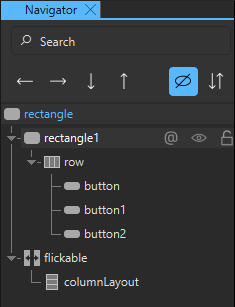
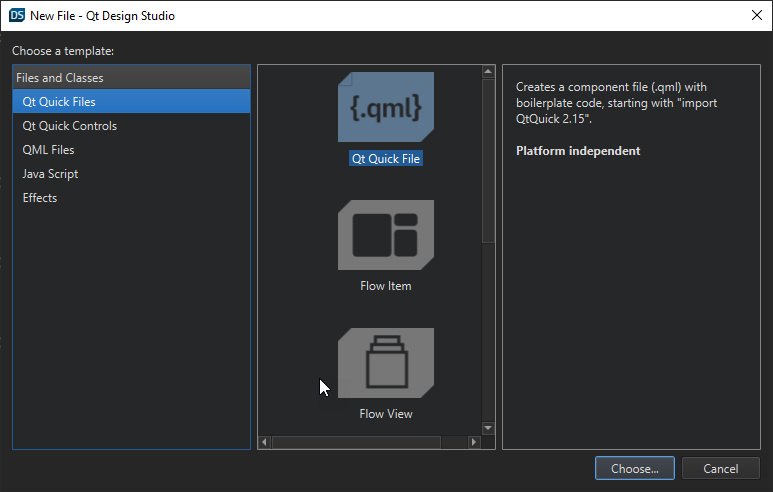
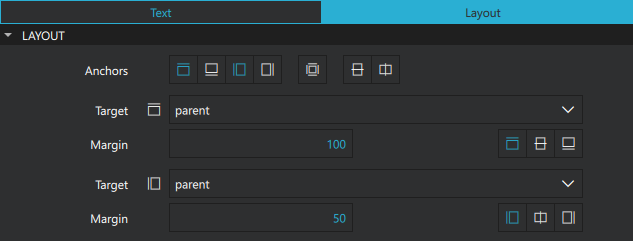
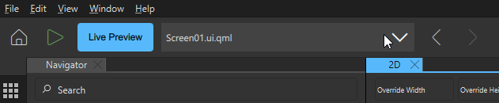
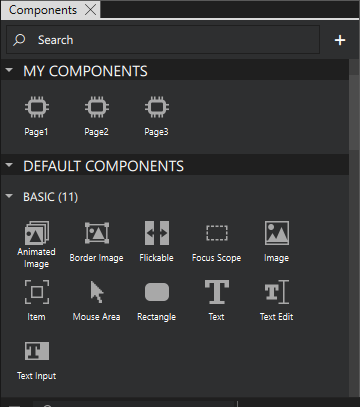
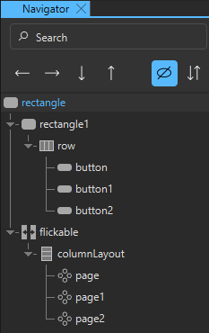
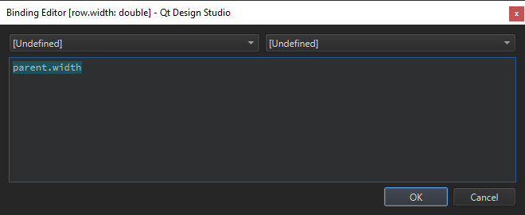

Creating a Single Page Navigation Web Application
This example explains how you can create a single page navigation web application suitable to run in Qt Design Viewer. In this project, you create the structure and navigation for the web application.
Setting up the Project
To set up the project:
- In Qt Design Studio, create a new project where you set:
- Preset to Desktop > Launcher.
- Resolution to 1024 x 768.
- Target Version to 6.2.
- In Navigator:
- Select and delete Text.
- Select Rectangle and in Properties, set Fill color to #ffffff.
Adding Components
Next, add the needed components to create the structure for your web application.
Add the QtQuick Layouts module:
- In Components, select

- Select QtQuick.Layouts.
To add the structure for the web application, drag and drop the following components from Components to rectangle in Navigator.
- Rectangle
- Rectangle
- Row
- Button
- Button
- Button
- Row
- Flickable
- ColumnLayout
- Rectangle

Creating the Pages
Next, create the separate pages for your web application. In this example, you create pages for Home, About Us, and Contact Us.
You create each page as a separate component and then add it to the main application.
To create the first page:
- Go to File > New File.
- On the Qt Quick Files tab, select Qt Quick File.
- Select Choose and enter a name, for example, Page1.
- Set Root Item to Rectangle.

When you have created the new page, select rectangle in Navigator, and in the Properties view:
- Set Size > H to 1024.
- Next to Size > W, select
 and select Reset.
and select Reset.
Next, create a header for the page:
- From Components, drag a Text component to Rectangle in Navigator.
- In Properties, go to the Text tab and set:
- Text to Welcome.
- Style Name to Bold.
- Size to 32 px.
- On the Layout tab set the anchors and margins to:
- Top, 100
- Left, 50

Now, with the first page done, create two more pages in the same way. For these pages, set the text to About Us and Contact Us respectively.
You can change the file that you are working on from the drop-down menu in the toolbar. Now, select Screen01.ui.qml from this menu to go back to your main page.

You can see the pages you created under My Components in the Components view. To edit a component, right-click it in Components and select Edit Component

Organizing the Pages
To organize the pages vertically:
- From Components, drag each of the pages to columnLayout in Navigator.

- Select columnLayout in Navigator and in Properties:
- Next to Size > W and Size > H, select and select Reset.
- Set Column Spacing to 0.
- Next to Size > W and Size > H, select
- Select flickable in Navigator, and in Properties:
- Next to Size > W and Size > H, select and select Reset.
- Set Content size > H to 3072.
- On the Layout tab, select Fill parent component.
- Next to Size > W and Size > H, select
You must also create a scrollbar to scroll the web application. You create vertical and horizontal scrollbars that are visible only when the content doesn't fit in the window, similar to web browser scrollbars.
To create the scrollbar, go to the Code view and enter the scrollbar code inside the Flickable component:
Flickable {
id: flickable
anchors.fill: parent
contentHeight: 3072
ScrollBar.vertical: ScrollBar {
policy: flickable.contentHeight > flickable.height ? ScrollBar.AlwaysOn : ScrollBar.AlwaysOff
width: 20
}
ScrollBar.horizontal: ScrollBar {
policy: flickable.contentWidth > flickable.width ? ScrollBar.AlwaysOn : ScrollBar.AlwaysOff
height: 20
}
...
To align the scrollbar to the right and bottom side of the window, set the height and width of the main rectangle so that it adapts to the window size.
- In Navigator, select Rectangle.
- In Properties, select
 next to Width and select Set Binding.
next to Width and select Set Binding. - Enter
Window.width - Repeat step 2 and 3 for Height and set the value to
Window.height.
Creating the Navigation
The final step is to create the navigation for the web page. To do this, use the buttons that you created earlier.
First, create an animation to use when scrolling between the different pages:
- From Components, drag a Number Animation to Rectangle in Navigator.
- In Properties, set:
- Target to flickable.
- Property to contentY.
- Duration to 200.
Next, connect the buttons to the number animation to scroll the content vertically to the correct place.
- In Navigator, select rectangle and in Properties set:
- Height to 40.
- Fill color to #e0e0e0.
- Z stack to 1.
- Select next to Width and select Set Binding.
- Enter
parent.width.
- In Navigator:
- Select Button and on the Button tab in Properties, set Text to Home.
- Select Button1 and on the Button tab in Properties, set Name to About Us.
- Select Button2 and on the Button tab in Properties, set Name to Contact Us.
- In Code, enter connections for each of the buttons to run the number animation when pressed.
Button { id: button text: qsTr("Home") Connections { target: button onPressed: { numberAnimation.to = 0 numberAnimation.start() } } } Button { id: button1 text: qsTr("About Us") Connections { target: button1 onPressed: { numberAnimation.to = 1024 numberAnimation.start() } } } Button { id: button2 text: qsTr("Contact Us") Connections { target: button2 onPressed: { numberAnimation.to = 2048 numberAnimation.start() } } }
Previewing the application
To preview your application in the live preview, select Alt + P. You can also go to File > Share Application Online to share and preview your application in a web browser.